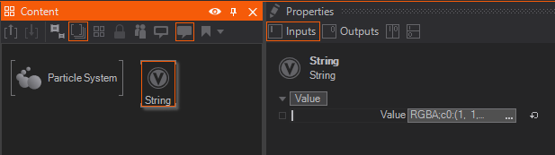
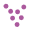

How To create a Firework Particle System
Table of Contents
In this how to you will follow steps to create a somewhat complex Particle System. It will be made of different Inline Streams and it will use Links to write into buffers that can be read out from different emitters and other streams.
This is a a very straight forward How To, but it is very important to stick to the orders of the Modules and Nodes used inside the Particle Streams. Pay attention to the Values! Sometimes slightly different values can have a big impact on the overall look and feel of the Particle System Result.
You will find a small explanation at the end of each Stream, which should give you an idea of what you have added to it, and why you have made changes to specific values.
This How To is directed to intermediate users of Ventuz. You should be familar with Nodes and Bindings, working with the Color Gradient Editor, how to handle the String node and how to get around with Materials.
Introduction
Even if it seems to be an easy task to create a firework, it is made of a complex rundown. Imagine how a firework works and how you would need to create the particles for it:
- First the Rocket, Capsule or Mainbody is shot in the air. Gravity pulls it a bit down after a moment since it loses energy.
- The Body has a sparkling trail which is the result of the burning propellant.
- After a given time the Body explodes and therefore the propellant stops.
- This ignites the blackpowder for the flares that shoot out.
- You see the glitter in the air from the blackpowder. The Glitter is slowly pulled down due to the gravity.
- The flares are scattering around and start to fall down due to the gravity.
Tips and Preparation
As you see, this is not as easy as it looks in first. Especially if you would need to realize this with a Ventuz Particle System. After you have a rough idea of how a single firework shot works we can start to create our own virtual firework! But before that we start with some tips related to this HowTo:
We will create several Gradients and therefore work with the Color Gradient Editor, also a good thing to know is that you can make use of a String node to Get and Set Gradients. You will see a Gradient String inside of collapsible elements like the following one.
Copy and paste the content inside a string node String node

Bind the Gradient Property to the String node.
The Gradient will then use the content of the String node and you have a customized Gradient. You can delete the String node afterwards.
Setup
We will work in a Standard 3D-Layer, use a Particle System node and create four Inline Streams. The four streams are named: Body, Trail, Flares and Glitter.
Start by dragging and dropping a ParticleSystem into the Hierarchy Editor and select the First Inline Stream:
The Body
This is the Mainbody of our Firework and will be the longest stream. Rename the Inline Stream to Body.The Body is made of a Source emitter , Directional Gravity modifier  , Gradient
, Gradient  , Link Out , again a Gradient followed by a Simulation Module
, Link Out , again a Gradient followed by a Simulation Module  , another Gradient and a Sprite
, another Gradient and a Sprite  renderer.
renderer.
Use the following Values for the Emitter and Modules:
Source Emitter:
| Property | Value |
|---|---|
| SpeedY | 7 |
| RandomSpeedX | 2 |
| RandomSpeedY | 0.25 |
| RandomSpeedZ | 2 |
| RandomSpeedAll | 0 |
| Rate | 0.25 |
| Burst | 0 |
Directional Gravity:
| Property | Value |
|---|---|
| GravityY | -9 |
Gradient:
Plain White - Remove all the stops so that just a white gradient is left.
| Property | Value |
|---|---|
| Operation | Overwrite |
Its important to set the Operation to Overwrite. If you use the Gradient inside a simulaion loop you must set the operation to overwrite, else the color will be multiplied and it just takes seconds until the color is black! A red warning message will appear to help noticing whenever this happens.
Link Out:
| Property | Value |
|---|---|
| LinkName | Body |
Gradient:
Rainbow Preset - Just select the Rainbow Preset
| Property | Value |
|---|---|
| Source | Random |
| Target | Color&Alpha |
| Operation | Overwrite |
Simulation:
| Property | Value |
|---|---|
| TimeoutEvent | BodyDead |
| EnableTimeoutEvent | true |
Gradient:
Plain White - Remove all the stop so that you just got a white gradient
| Property | Value |
|---|---|
| Operation | Overwrite |
Sprite Renderer
Unfold the Materialstage with the default sprite (alphaglow_full.png) and set the color to:
| Property | Value |
|---|---|
| BaseColor | 66,39,0 |
We have used a lot of Modules and Values right now. Lets go trough the "what and why": The SourceEmitter has been set to shoot a Particle every 4 seconds (0.25 / Second) with an overall speed along the Y axis of 7. With the Random Speed we have managed it that the Particle will not only go straight up, it will vary for every shot.
The DirectionalGravity will pull the Particle/Body down, we used a nearly realworld value of 9 here.
The first Gradient inside the simulation loop: We set it to White and Overwrite to make sure it will create a plain white particle for the next simulation loop again. Afterwards we are able to modify its color by adding another color ontop. Since this Gradient is inside a simulation loop we had to set it to overwrite, if we would not have done that it would just take a few seconds or loops until the color multiplied itself to black. The only possible and allowed operation for the first gradient module inside a simulation is to have the overwrite option.
The Link Out has been named Body, so another stream (e.g. a secondary emitter) can make use of this Linkbuffer. Emitters and Streams can make use of the Position and all the other values provided by the Link Out. In our case we will hook the "Trail" Inline Stream onto the Body position by using the Link Out Buffer. Since we used a Gradient with a Color-Overwrite before, it will output this color values as well.
Then again we use a Gradient. This time the Source is set to Random and it has a Rainbow-Preset applied with the Overwrite option again. Since we have the Source set to Random it will, whenever a new particle is emitted, create a differently colored particle. This Random Color Value information will be output with the next module, the Simulation
Simulation has been named BodyDead and we have set EnableTimeoutEvent. This will write internally into a buffer named BodyDead, as soon as the particle from this simulation dies. This buffer can be used to "ignite" the Flares- and Glitter- particle inline streams. We also write the Random Color Value from before into the buffer so that every Flare will have a random color when it is emitted.
Again we use a Gradient with plain White and the Overwrite option to have a plain white base color for the next module, the Sprite renderer.
The Sprite, which will render a simple alphaglow on the screen has been adjusted to a slight orange.
This is one of the most complex streams right now since we have a lot of link-outputs and buffers and we needed to create the base for all the following streams.
Trail
Time to create the Trails that are the burning propellant of the Rockets Body. The trail will constantly emit from the Body position and the black powder will fade off after a while. Create a new Inline Stream, name it Trail and use a Secondary  emitter, Simulation , Gradient modifier and a Sprite
emitter, Simulation , Gradient modifier and a Sprite  renderer.
renderer.
Use the following Values for the Emitter and Modules:
Secondary emitter:
| Property | Value |
|---|---|
| LinkName | Body |
| RandomPosX | 0.1 |
| RandomPosY | 0.1 |
| RandomPosZ | 0.1 |
| RandomSpeedAll | 0.2 |
| Rate | 250 |
| Lifetime | 0.5 |
| RandomLifetime | 65% |
| Jitter | 1 |
Simulation:
| Nothing changed |
|---|
Gradient:
| Property | Value |
|---|---|
| Source | Age |
| Target | Size |
Sprite:
As with the Body- Sprite, Unfold the Materialstage with the default sprite (alphaglow_full.png) and set the color to:
| Property | Value |
|---|---|
| BaseColor | 66,39,0 |
What and Why:
Now we used a Secondary Emitter as the Particle Source. The advantage of the Secondary Emitter in this case is that we can use a "link" and make use of another particle's position. Therefore we used the LinkName Body, this created a link between the body- and the trailemitter. Technically it reads out the Buffer called Body which holds information like: Position, Color and Forward Vector.
The Simulation makes it possible to modify the particles in realtime and make the trail follow the body.
The gradient is used like a curve-editor: we set the source to the Age and the target to the Size of the particles. With the gradient itself we define vaules. The Gradient will be used as an "Over time..." module now. So the White at the beginning of the gradient will indicate that the particles are at the biggest size, while at the end of their Lifetime the Black will scale the particle down to zero.
The rendered particle again is set to the same slight orange color as the body.
Flares
This will also be a long Inline Stream. Create a new Inline Stream named Flares with the following emitter and modules: We need a Secondary emitter, Directional Gravity module, Simulation , a Gradient and an Animation  module, a Sprite
module, a Sprite  renderer and Link Out .
renderer and Link Out .
Use the following Values for the Emitter and Modules:
Secondary Emitter:
| Property | Value |
|---|---|
| LinkName | BodyDead |
| RandomPosShape | Bouble |
| RandomSpeedAll | 2.2 |
| RandomSpeedShape | Bouble |
| Rate | 0 |
| Burst | 100 |
| Lifetime | 3 |
| RandomLifetime | 33% |
| Jitter | 1 |
Directional Gravity:
| Property | Value |
|---|---|
| GravityY | -0.75 |
Simulation:
| nothing Changed |
|---|
Gradient: Just a Custom Gradient, which can be used with the Copy&Paste into a String node technique.
Animation:
| Property | Value |
|---|---|
| Source | Age |
| Target | Sprite Rotation |
| Base | 0.5 |
| BaseRandom | 2 |
| SpeedRandom | 1 |
Sprite:
| Property | Value |
|---|---|
| Scale | 0.575 |
New Material Stage - Base&Alpha and use the Spike Star Texture
Link Out:
| Property | Value |
|---|---|
| LinkName | Sparks |
What and Why:
Again we used a Secondary emitter which was bound to the LinkName BodyDead. Whenever a Body dies it will start to emit - in our case Burst - around 100 Particles. The RandomSpeed was set to 2, which will shoot the particle burst in all directions. Since we used Bouble for the RandomPosShape, the particles will not emit in a real spherical manner, the Bouble will distribute the particles more uneven. The same goes for the RandomSpeedShape. We also set the Burst instead of the Rate, since we want to have a real Burst for one time instead of a constant emmiter with a rate. RandomLifetime has been set to 33% which will let the overall emitted particles die randomly - 33% earlier and later.
Gravity has been set to a low minus value (-0.75) which will pull the particles/flares a bit down, but not as heavy as the earth-like gravity.
The Simulation is mandatory.
With the Gradient, which is set to have a fade-to-black it at the very end, we manage it to have the particles to fade out at the end of their lifetime.
The Animation has its Target set to the Sprite Rotation. We modified the BaseRandom to 2, the result is now a Value between 2 and -2. So each emitted particle will have a random rotation at the beginning. By setting the SpeedRandom to 1 the particles will rotate either clockwise or counterclockwise with a random speed value (again between a range of -1 to 1).
As Sprite we selected the internal resource SpikeStar and used a Scale value of 0.575.
The Link Out LinkName is Sparks since we want to use a Secondary emitter that will create the glitter which some people like to call "golden shower firework sparks".
Glitter
The last stream of the whole particle system. The Glitter is a lot of small sparks that fall down like the famous golden shower effects for fireworks. The Glitter is made of a Secondary emitter , Directional Gradient , Simulation , three Gradient and a Sprite renderer  .
.
Use the following Values for the Emitter and Modules:
Secondary:
| Property | Value |
|---|---|
| LinkName | Sparks |
| Rate | 50 |
| LifeTime | 4 |
| RandomLifetime | 59% |
| Jitter | 0.606 |
Directional Gravity:
| Property | Value |
|---|---|
| GravityY | -0.271 |
Simulation:
| Nothing Changed |
|---|
Gradient:
Just a Custom Gradient
| Property | Value |
|---|---|
| Target | Size |
Gradient:
Used as Constant Color
Colorvalue 155,110,28
| Property | Value |
|---|---|
| Source | Age |
| Target | Color&Alpha |
| Operation | Overwrite |
Gradient:
Another Custom Gradient
| Property | Value |
|---|---|
| Source | Age |
| Target | Color&Alpha |
Sprite:
| Property | Value |
|---|---|
| Size | 0.05 |
What and Why:
For the Secondary emitter we have just made adjustments to the Rate and Lifetime to have long-lasting particles with a high variation in their RandomLifetime.
The Gravity has been adjusted to pull the particles gently downwards.
The first Gradient has a general fadeout but with very bright spikes in it just to have a more glitter-like effect which scales the particles up sometimes. Another Gradient is just to set a constant Color and Overwrites the actual color.
The last Gradient has again very bright spikes but is set to add onto the color. This produces a flickering effect which is common for a golden shower firework. The small particles will start to blink and flicker.
Sprite Size has been adjusted to 0.05 which is very tiny and will allow us to have a high amount of Particles on screen. On one hand we have a high amount of Particles on screen on the other we have them very tiny and blinking and flickering.
Camera
Just create a camera in the Hierarchy Editor and set its Position to : PositionX -0.5, PositionY 2.5, PositionZ -10.
Layer FX
To have a bit more Glow and Effects applied we would add two layer effects to the 3D - Layer. The Glare and Feedback.
Adjust the FX like in the Screenshot below to enjoy a wonderful Firework Particlesystem with random Colors.
Conclusion
It is possible to have one Particle System made out of different Inline Streams. You can use a simple Particle System to create stunning Effects and on the other hand, sometimes you need to create complex Particle Systems to create simple Effects.
Links are Buffers, you can write anything at anytime into these buffers, give them a name and access these buffered values everywhere. You can use these Buffers (Link Out and Link In) to control a secondary emitter and reuse the positions, colors and vectors. You can use the DeathTime to fire a secondary emitter. Gradients can be used as a kind of curve editor. You can remap values to control other parts or modules and modifiers of a Particle System. The possibilitys you have are nearly endless and you can create amazingly complex particle systems. Even with this "How To" we have just scratched the surface, we have a lot more Emitters, Modifiers and Renderers available. If you want to dive more deeply into the Particle System world just download our Presets and have a look at them.
Since you have now successfully completed this how to you should have a better understanding of all the modules and how they work together.
If you have created a stunnig Particle System which you would like to share, we invite you to share it on our Forums Ventuz Forums.
This Scene can be found in the donwloadable Particle Presets : FireWork_II.vzs